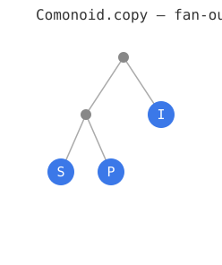
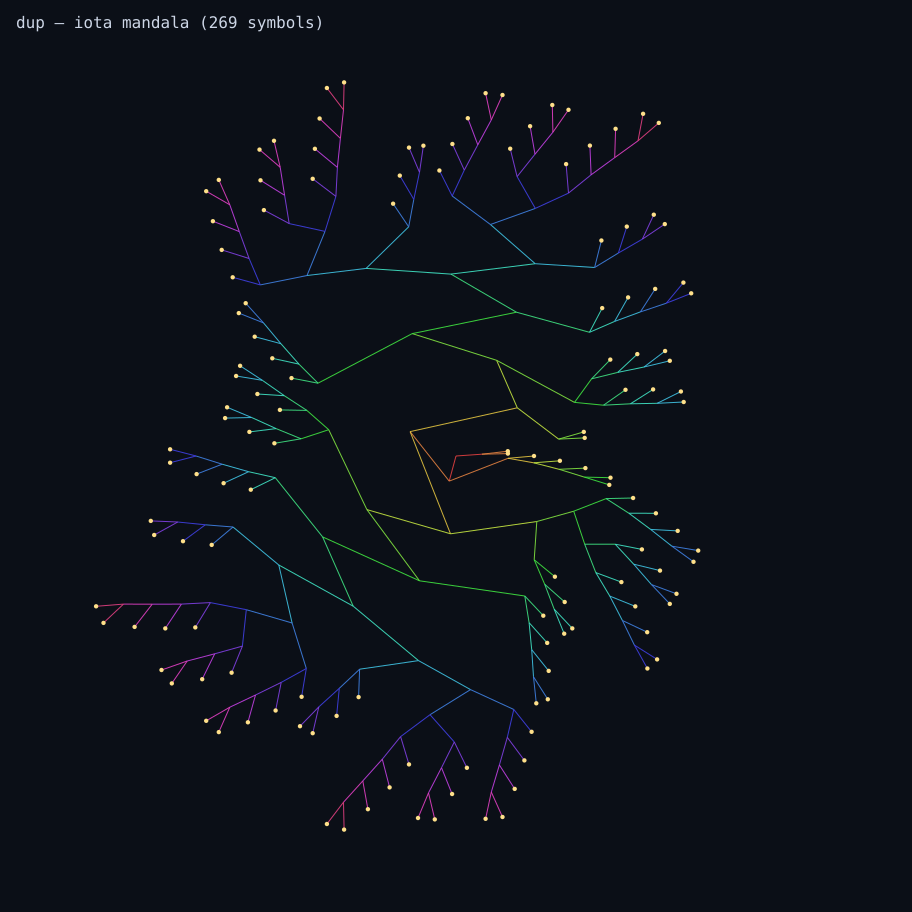
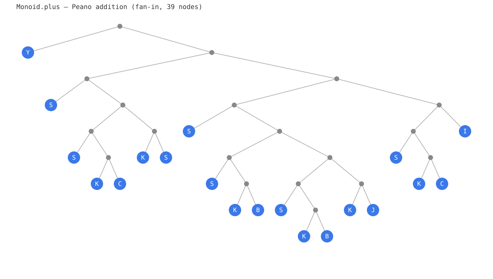
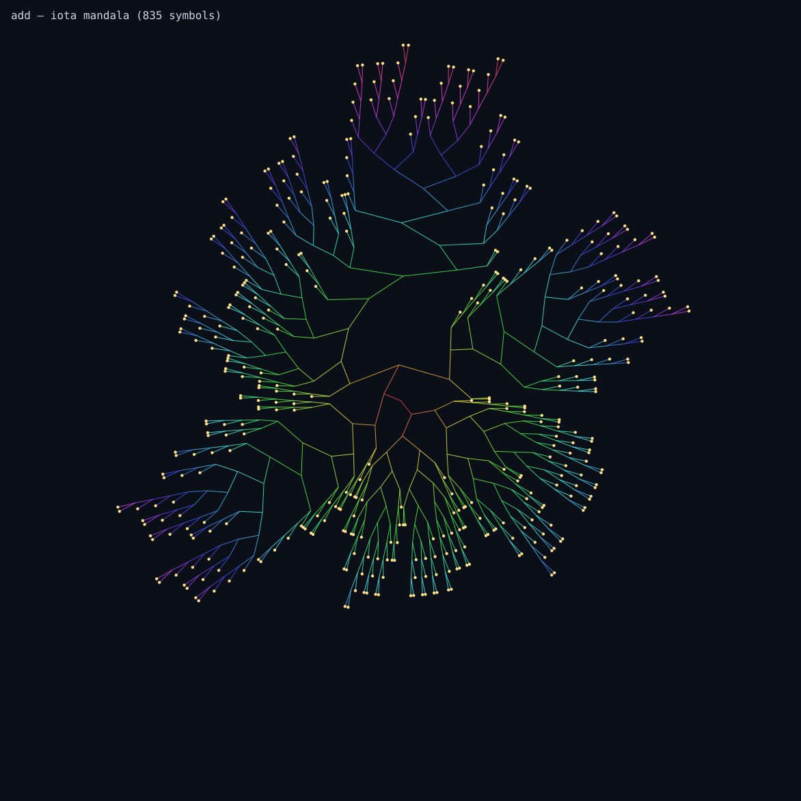
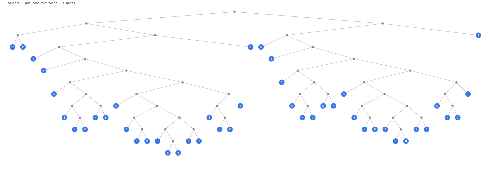
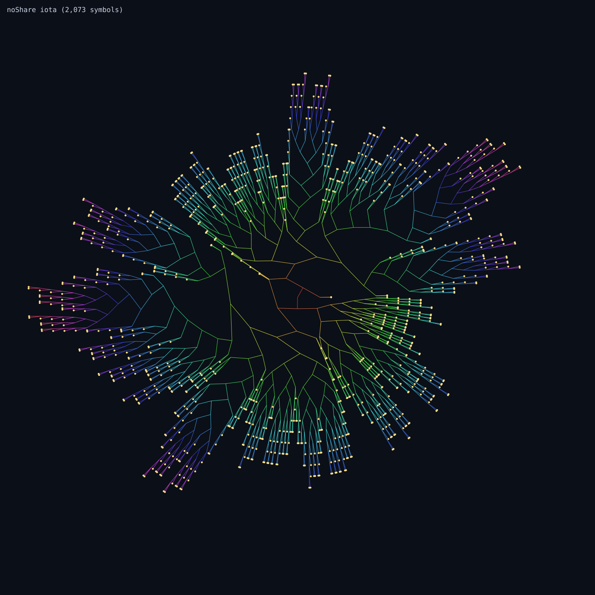
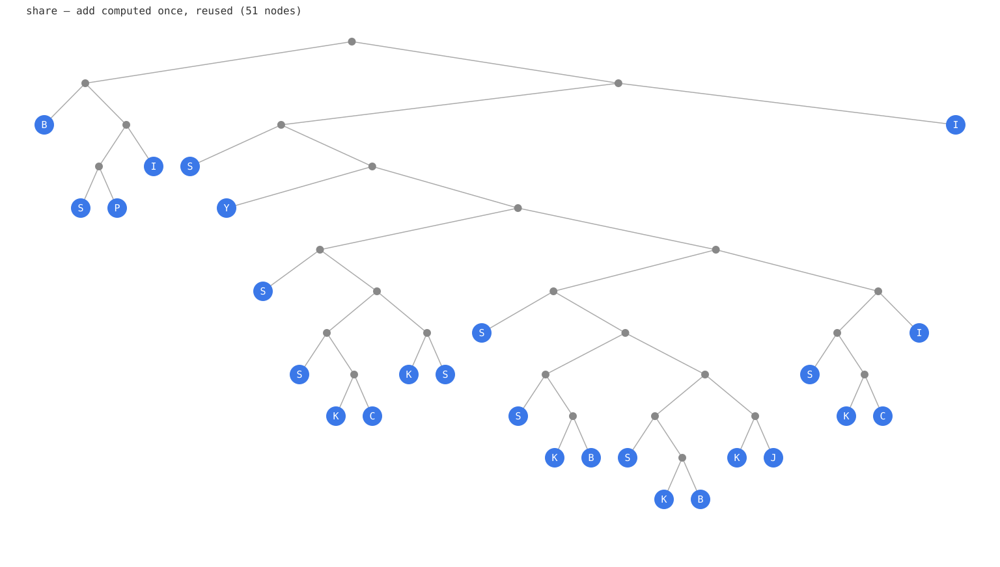
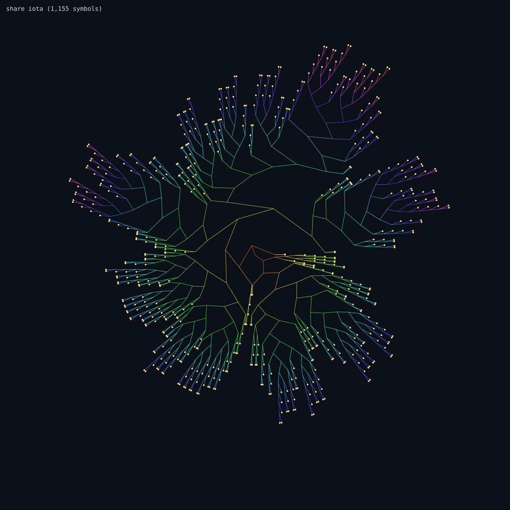
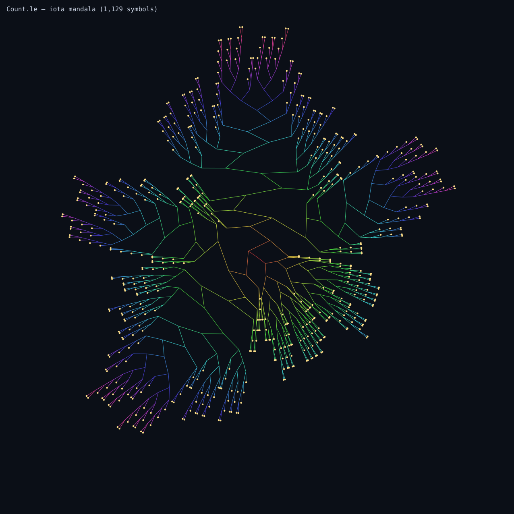
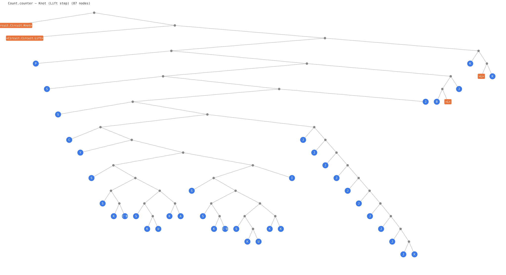

Combinator fingerprints of pure functions compiled through MicroHs → iota.
Pipeline: MicroHs program → gmhs -ddump-combinator → iota → treedraw.py → SVG.
The four structural rows of circuits' Circuit.Net:
Copy, Discard,
Add, Zero.
Together they form the bimonoid. Under the dagger (transpose),
fan-in and fan-out swap — the one-line reveal of circuits-ad.
| function | role | nodes | iota | pure |
|---|---|---|---|---|
copy | Comonoid.copy — fan-out | 5 | 269 | yes |
discard | Comonoid.discard — delete | 3 | 12 | yes |
add | Monoid.plus — fan-in | 39 | 835 | yes |
zero | Monoid.zero — create | 3 | — | no |

S P — constructs a pair. Trivial. The pullback of plus under differentiation.

5 combinator nodes expand to 269 iota symbols. The simplest non-trivial tree.

Peano addition. Recursive via Y fixpoint. 7.8× larger than copy. The pullback of copy under differentiation.

The cost of recursion made visible. Under the dagger, this swaps with copy.
Circuits' Knot with the (,) tensor ties a lazy self-referential binding.
let y = add x x in (y, y) computes add once and reuses the result.
Without sharing, add is inlined twice.
| function | nodes | iota | saving |
|---|---|---|---|
noShare — add computed twice | 91 | 2,073 | — |
share — add computed once | 51 | 1,155 | 44% |

Two copies of the add recursion, each 39 nodes.

Duplication cost at the combinator level — two recursive sub-trees.

One add call, result shared via let. 44% smaller.

The (,) tensor trace achieves the same effect: one binding, shared across the circuit body.
A step function that counts to 10 (or 11) via Peano comparison.
Left = continue, Right = exit. The le comparison
is invariant to the target value — always 39 nodes, 1,129 iota.
| function | nodes | iota | notes |
|---|---|---|---|
le — less-than-or-equal | 39 | 1,129 | invariant to N |
step — count to 10 | 83 | — | L box |
step — count to 11 | 85 | — | +2 per S |
Peano comparison. Recursive with Y fixpoint. Same tree for count-to-10 or count-to-10,000.

The pure iota encoding of le. Every edge is 0 (apply) or 1 (ι).
Root at center, depth coded by edge colour. This is the computation with everything
stripped away: no data types, no pattern matching, no control flow. Just application
and one combinator.
The three constructors — Lift, Compose,
Knot — compile to opaque GADT boxes. The computation lives inside
Lift as a base-arrow function. When that function is pure, it gets a full iota
fingerprint. The GADT itself is 2–4 nodes of overhead that enable structural inspection
before closing.
The step function. Nearly pure — only the L (Either's Left injection) blocks full iota encoding.

4 extra nodes for the Circuit GADT wrapper. Knot and Lift are scaffolding.
let vs inline duplication. This is what circuits' (,) trace
achieves via lazy knot-tying.
reify adds
dictionary passing (~6 more nodes). encode via Hyper is tighter but still
opaque to the combinator dumper.
le is the
same 39 nodes whether comparing against 10 or 10,000. Only the Peano literal grows linearly (2 nodes per S).
Generated by circuits-iota · MicroHs (augustss) · iota-render (Tritlo) · circuits (tonyday567) · June 2026